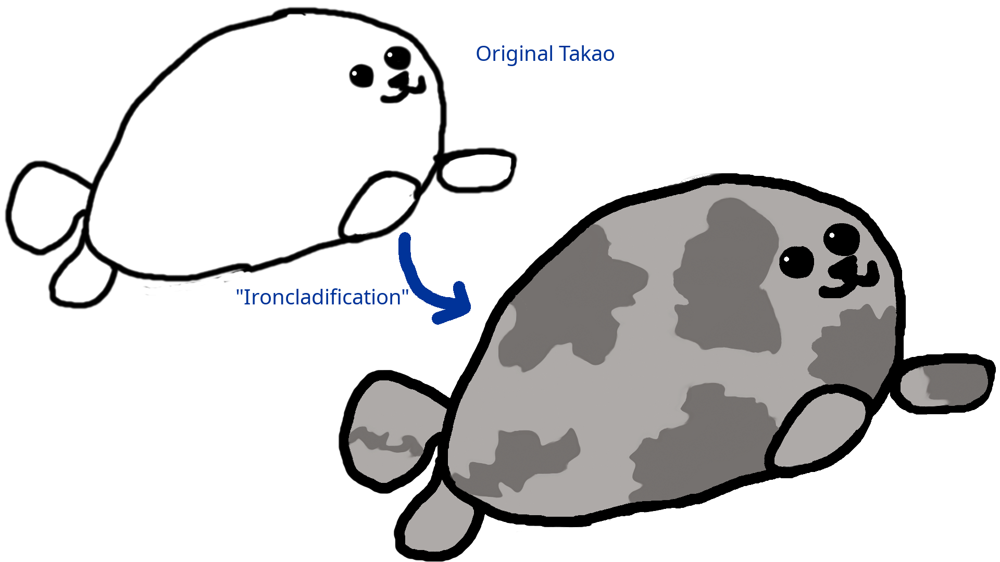

Takao, the Ironclad seal
Takao is the pet and icon of Ironclad, and it is meant to represent the operating system kernel, not any other aspect of the project, like its community, or corporate shenanigans.
The Takao image's copyright is owned by streaksu. Permission to use Takao's likeness is granted for non-exclusive use to label anything related to Ironclad. Distributions of Ironclad or forks of the project are free to use their own logos and/or mascots as well as Takao.
Certain variants are also permissible, like changing Takao's facial expression, or attire. The patches of the coat are important though, the shape of them should stay the same for easier recognition, but that's ultimately up to you.

Takao's History
Takao got their name from a previous operating system project of mine that, in many ways, was the beginning of Ironclad.
Takao, the seal, was also the pet of Takao, the operating system. With the advent of Ironclad, and a little change of coat, Takao also became the pet of Ironclad.
Once Ironclad started being featured in presentations and stickers, the rugged borders and low-res PNG format made it difficult to modify and use. Thus, a face lift was due! Resulting in the new stylized version that nowadays represents Ironclad.